Your database, without the wait.
A native database client for PostgreSQL, MySQL and MariaDB on macOS and Linux: a full toolbox that opens in 0.3 seconds.
Free · Open source · v0.1.0 · 24 MB · Apple silicon
Not notarised yet: one extra step at first launch.
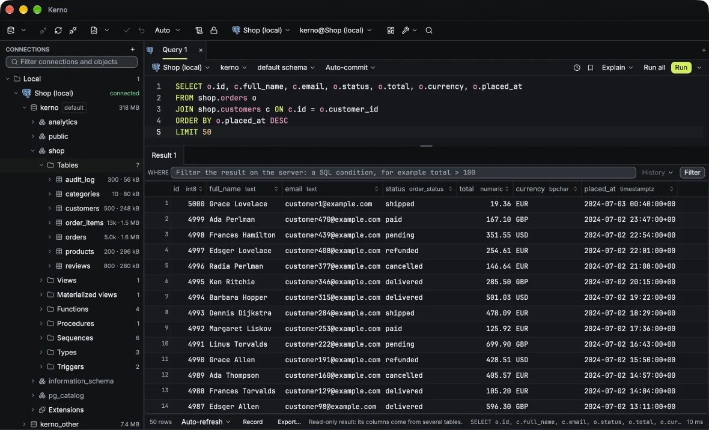
This window appeared in 279 ms: Kerno’s measured launch time.
Production looks like production.
Flip the switch. The window’s chrome turns red, and every statement asks before it runs.
On a local connection your statement just runs. On production, Kerno shows the SQL and waits for your yes. Twice, when it changes data.
- Environments are yours: name them, colour them, set their rules.
- Confirm every statement, or only the ones that change data.
- Read-only connections are read-only on the server too.
- A transaction left idle is rolled back after the delay you choose.
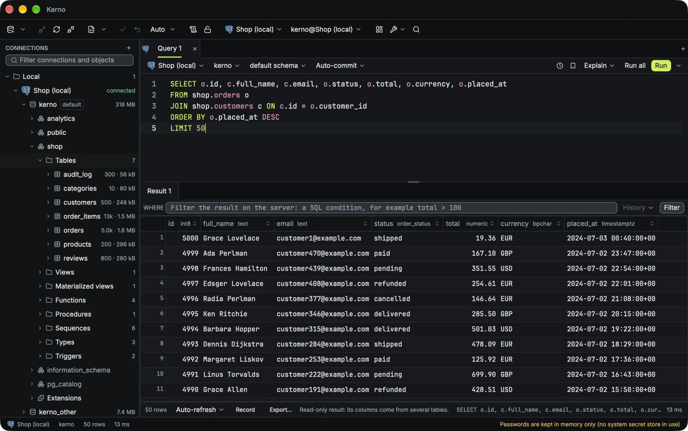
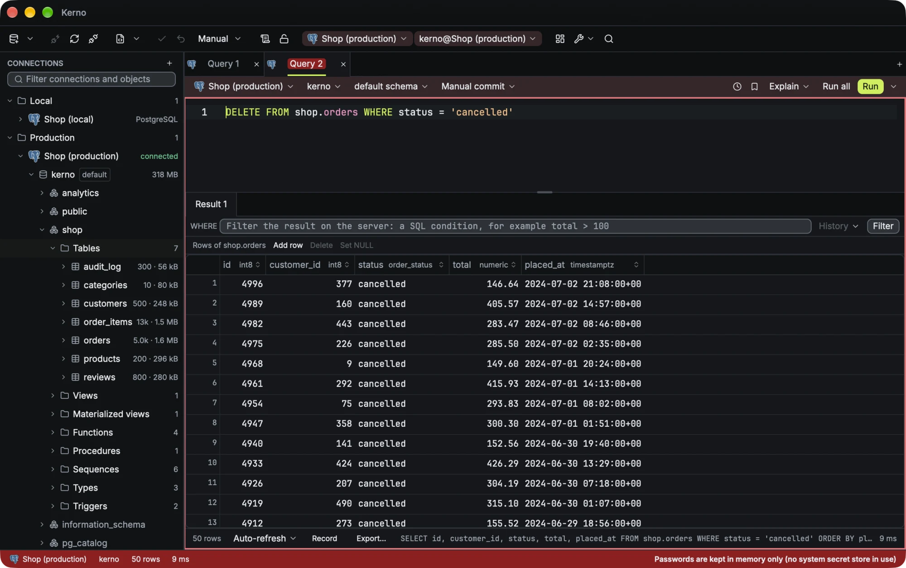
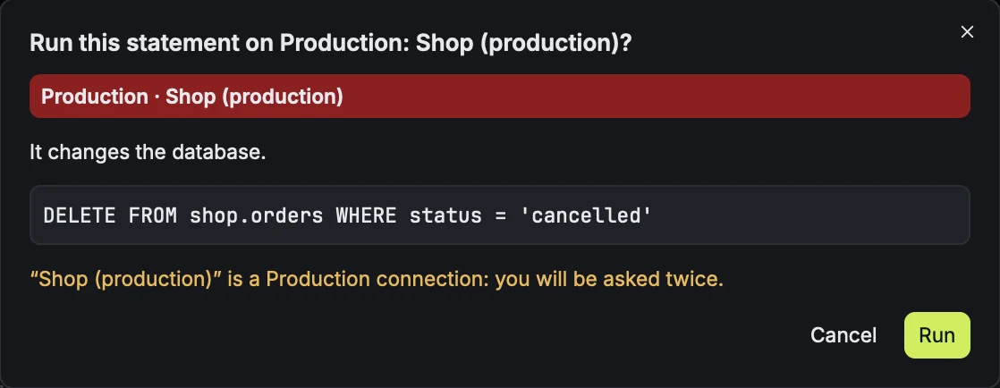
279 ms
From launch to a window you can use. Median of 30 cold starts.
Blink.
It’s open.
Kerno starts in about 0.3 seconds and scrolls a million rows at a steady 120 frames a second. There is no splash screen to sit through.
- 120 fps
- held over 1,000,000 rows: 8.3 ms a frame on average, 99 frames in 100 within 8.4 ms.
- 3 ms
- from the server’s first byte to rows on your screen.
- 1.5 s
- to fetch all 1,000,000 rows of a 20-column table from PostgreSQL: about 670,000 rows a second.
Every figure was measured on a MacBook Pro M3 Pro, not estimated. See how it was measured
Everything you reach for.
The whole toolbox of a heavyweight client, in an app that stays light.This window is live: run a query, edit a cell, open a dialog. It is a demo with sample data.
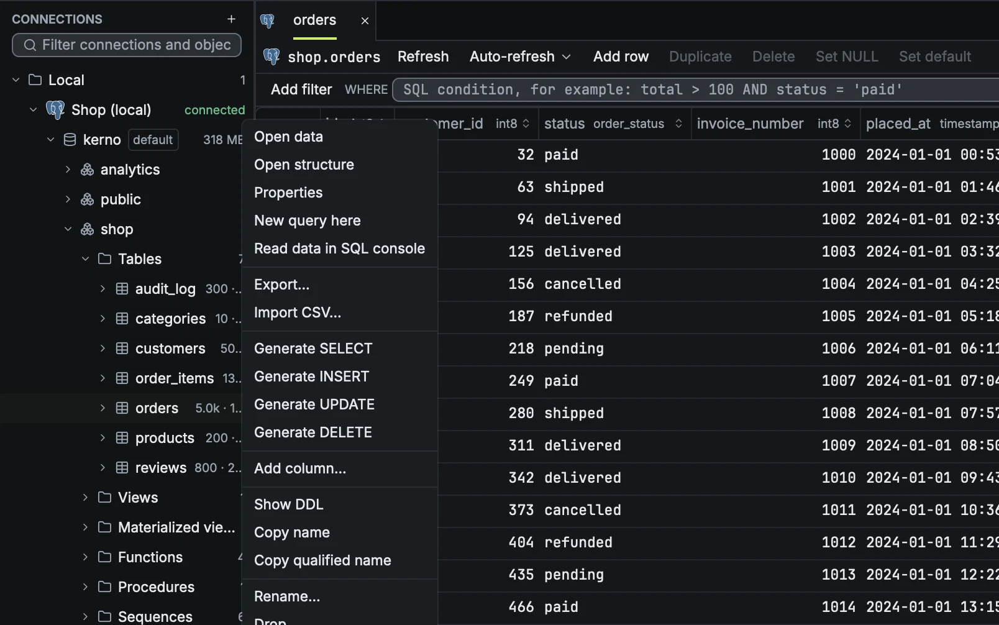
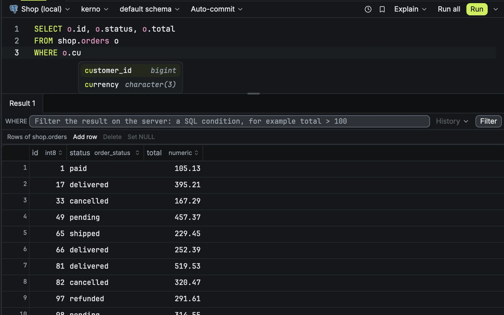
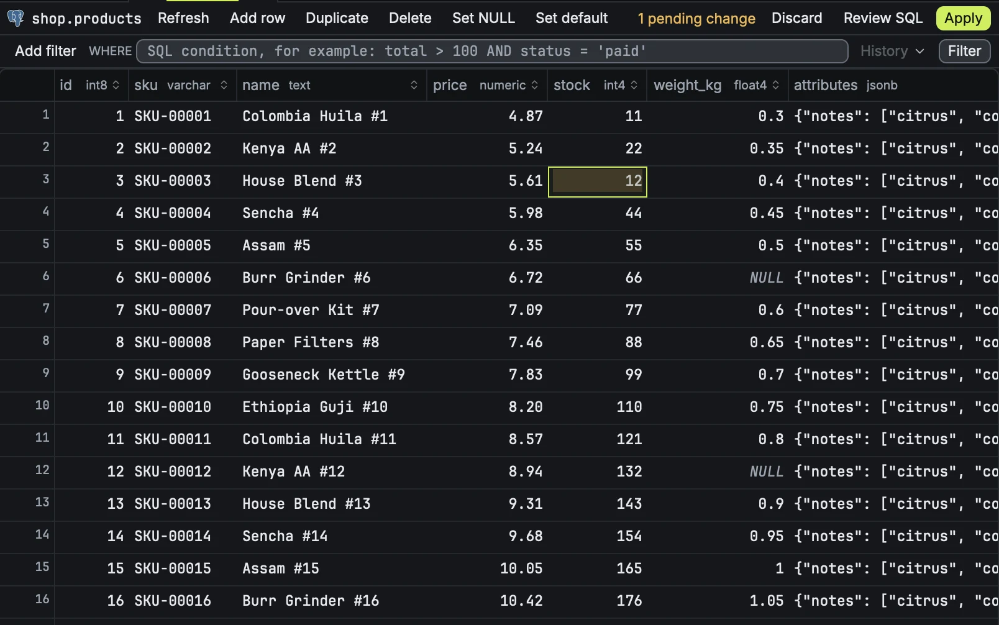
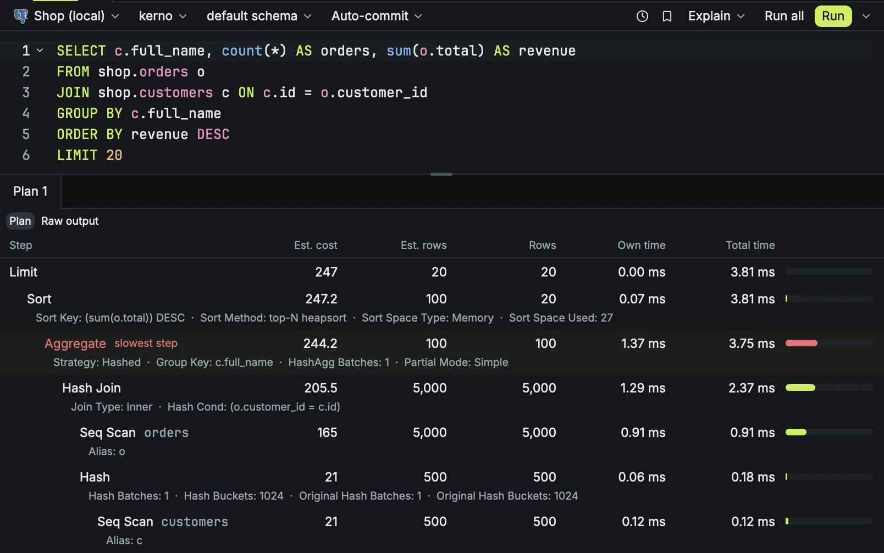
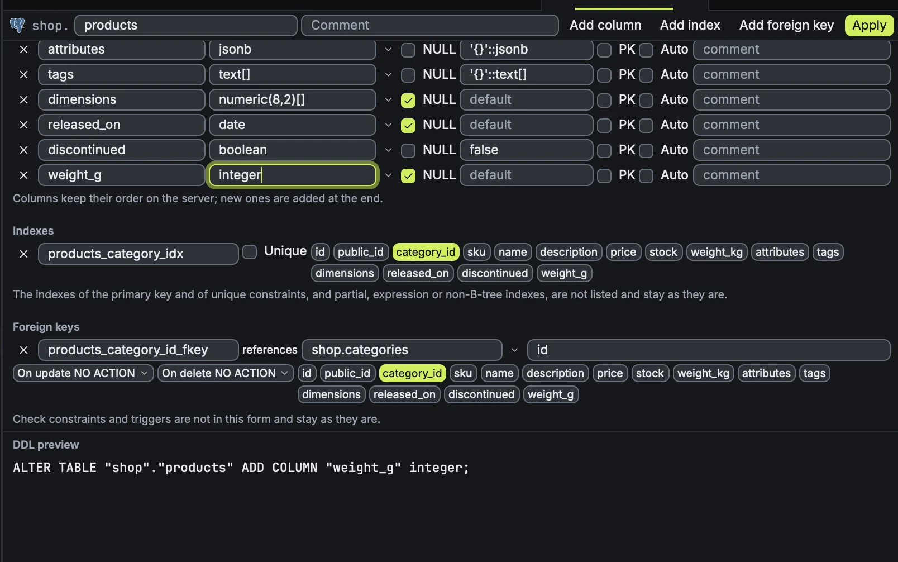
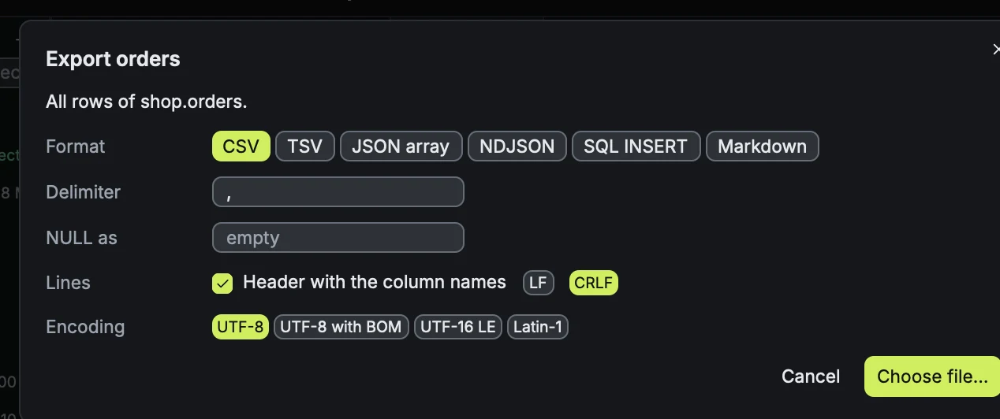
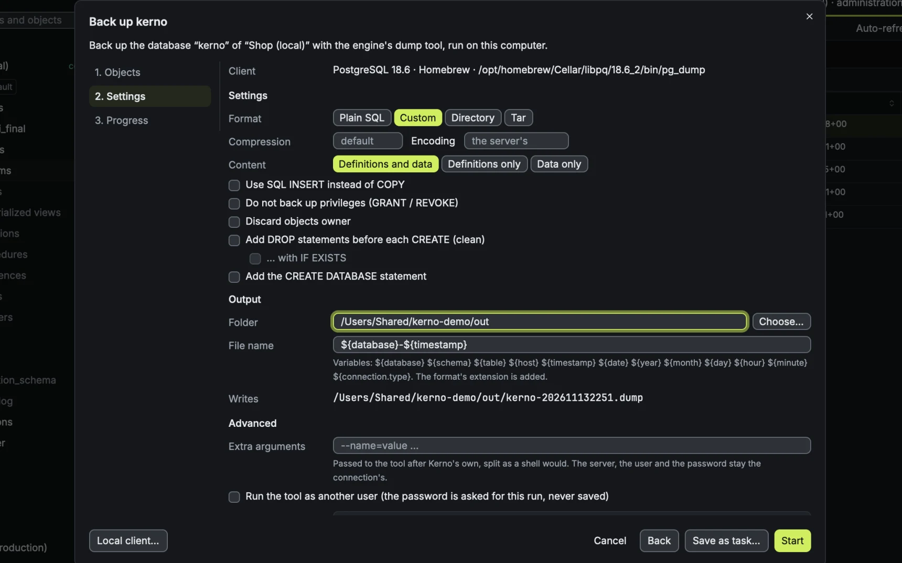
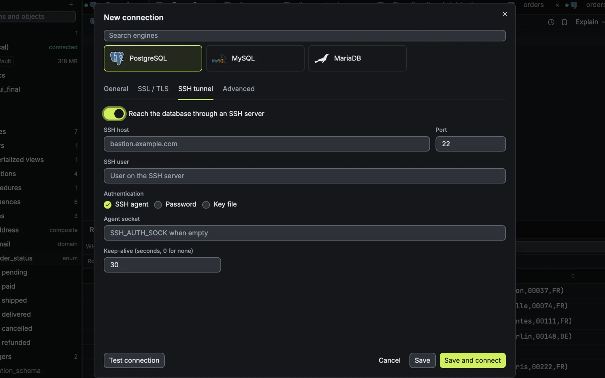
Every table, view and function in one tree, a right-click from anything.
Completion from your schema, one keystroke to run, typed results.
Edit cells in place, read the SQL, apply it in one transaction.
EXPLAIN as a tree, with the slowest step marked for you.
Change a table in a form and watch the DDL write itself.
CSV, JSON, SQL and Markdown, streamed straight to disk.
pg_dump and mysqldump behind a wizard you can save and rerun.
Tunnels, agents, keys and certificates, built into the connection.
No Electron. No telemetry.
Kerno is written in Rust and drawn by your GPU. There is no account to create, and your data never leaves your machine.
- 24 MB
- to download. No bundled browser, no runtime to install.
- Your keychain
- holds the passwords: macOS Keychain or Linux Secret Service.
- Zero tracking
- No analytics, no crash reports. One update check you can switch off.
- MIT or Apache
- Read the code and build it yourself. It stays free.
Fast everywhere. Careful on production.
Free and open source, with no account to create.
- Check it.
shasum -a 256 --ignore-missing -c SHA256SUMS - First launch. The build is not notarised yet, so macOS blocks it once: open System Settings, Privacy & Security, and choose Open Anyway.
- Or build it.
cargo build --release -p kernoFrom the source on GitHub. - Know the limits. 0.1.0 is a first release. Not yet: SQLite and other engines, ERD diagrams, schema and data compare, an Intel Mac or Windows build. The roadmap
Questions, answered.
Something missing? Ask on GitHub.
Is Kerno really free?
Yes. Kerno is open source under the MIT or Apache-2.0 licence, your choice. There is no paid tier and no account.
Which databases does it work with?
PostgreSQL, MySQL and MariaDB today. SQLite is next on the roadmap, and other engines follow through the same driver layer.
Does it run on my computer?
On macOS, the download is built for Apple silicon; there is no Intel build yet. On Linux, the release is a tarball for arm64 with the binary, a desktop entry and the icons. Anywhere else, it builds from source with a stable Rust toolchain.
How do I know my download is genuine?
Every release comes with a SHA256SUMS file to check your download against, and Kerno verifies each update the same way before it installs. The app is not notarised by Apple yet, so macOS asks you to confirm the first launch in System Settings, under Privacy & Security.
Where are my passwords?
In your system’s secret store: the macOS Keychain or the Linux Secret Service. Never in a plain file, never in a log. If no secret store is available, Kerno asks when you connect and forgets the password when it quits.
Does Kerno send anything about me?
No. There is no analytics and no crash upload. The one request Kerno makes on its own is a check for a new version on GitHub, and a setting turns it off.